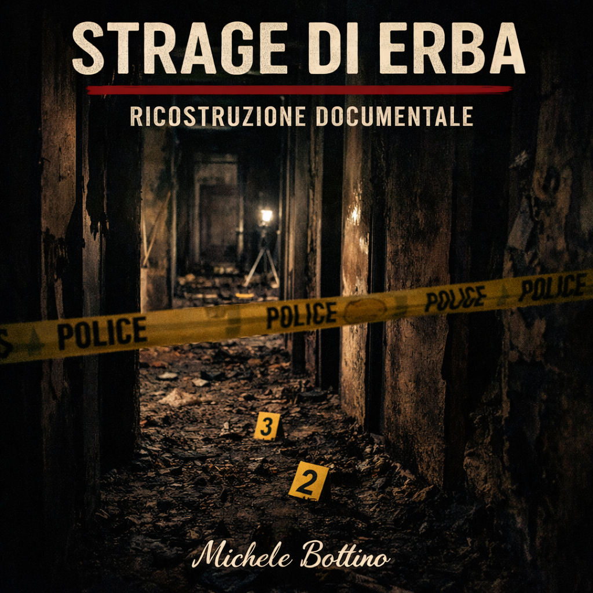

La strage di Erba è uno dei casi in cui la distanza tra definizione giudiziaria e conflitto narrativo si manifesta in modo più netto. L’11 dicembre 2006, all’interno di un contesto condominiale segnato da rapporti difficili e tensioni pregresse, si consuma un massacro che lascia quattro vittime: Raffaella Castagna, il piccolo Youssef Marzouk, Valeria Cherubini e Paola Galli. La scena è brutalmente segnata dalla violenza e da un incendio appiccato dopo l’aggressione. Fin dall’inizio, quindi, il caso si presenta come una struttura in cui omicidio plurimo e alterazione della scena coincidono.
Dal punto di vista dei dati stabili, alcuni elementi emergono con forza. Le vittime vengono colpite all’interno dell’abitazione. L’incendio interviene successivamente, in una funzione chiaramente compatibile con la distruzione o la compromissione delle tracce. C’è un unico sopravvissuto, Mario Frigerio, e proprio la sua testimonianza assumerà un peso centrale. Questo dettaglio è decisivo, perché colloca il caso in una forma particolare: non una sequenza costruita solo su indizi materiali, ma una struttura in cui dichiarazioni, confessioni e riscontri si intrecciano in modo molto stretto.
Il nome di Olindo Romano e Rosa Bazzi emerge rapidamente come nucleo dell’ipotesi accusatoria. Il processo si costruisce attorno a più elementi: le confessioni rese nelle prime fasi, la loro successiva ritrattazione, i rapporti di vicinato, la testimonianza del sopravvissuto, alcuni riscontri materiali e la ricostruzione complessiva della dinamica. Ed è proprio questo intreccio a definire la natura del caso. Non esiste, da solo, un unico elemento che possa spiegare tutto. La forza del quadro processuale deriva dalla convergenza di più segmenti.
Le confessioni rappresentano uno dei punti più delicati. Da una parte costituiscono un elemento fortissimo: due imputati che descrivono il delitto. Dall’altra, la successiva ritrattazione apre una frattura immediata. Questo produce una tensione strutturale che accompagnerà il caso per anni. Le confessioni sono state spontanee o indotte? Hanno un valore diretto o vanno lette solo in relazione agli altri dati? Sono il cuore della prova o un elemento da trattare con cautela? La persistenza di queste domande ha alimentato una parte rilevante del conflitto narrativo successivo.
Accanto alle confessioni, la testimonianza di Mario Frigerio ha avuto un peso enorme. È il solo sopravvissuto e, di conseguenza, il solo testimone diretto dell’aggressione. Il suo riconoscimento degli aggressori diventa uno dei cardini della struttura accusatoria. Ma anche qui si inserisce uno dei principali terreni di contestazione: le condizioni fisiche, la memoria, la possibilità di influenza, il tempo intercorso, la qualità della percezione in una scena di violenza estrema. Come in altri casi molto esposti, un elemento fortissimo diventa anche il centro della frattura interpretativa.
Il processo arriva comunque a una definizione stabile. Le condanne diventano definitive. Sul piano giudiziario, il caso si chiude. Questo è un punto che non può essere eluso: esiste una verità processuale consolidata, e questa verità attribuisce la responsabilità a Olindo Romano e Rosa Bazzi. Tuttavia, è proprio dopo la chiusura giudiziaria che il caso continua a vivere in modo anomalo. Le richieste di revisione, le nuove consulenze, i tentativi di rilettura e la costante esposizione mediatica tengono aperta una seconda vita del caso, non processuale ma narrativa.
La strage di Erba mostra quindi una forma bifasica molto precisa. Da un lato c’è una convergenza giudiziaria forte, fondata su più elementi che i giudici hanno ritenuto coerenti. Dall’altro c’è una persistenza del conflitto narrativo che, pur non avendo modificato il giudicato, continua a erodere la percezione di stabilità presso una parte dell’opinione pubblica. Questa seconda dimensione non è irrilevante, perché dimostra come un caso possa essere chiuso formalmente e, al tempo stesso, rimanere aperto come oggetto di disputa simbolica.
In termini strutturali, il caso Erba non è assimilabile né ai casi aperti senza convergenza né ai casi totalmente fondati su una sola prova dominante. Qui il punto decisivo è l’intreccio. Confessioni, ritrattazioni, testimonianza, dinamica e contesto si sostengono a vicenda nella costruzione del quadro processuale. Ed è proprio questo intreccio che viene successivamente attaccato dalla narrazione alternativa: non un singolo elemento, ma la coerenza complessiva del sistema.
È per questo che la strage di Erba continua a occupare uno spazio così rilevante nella memoria pubblica. Non solo per la violenza del fatto, ma perché rappresenta uno dei casi in cui si vede con maggiore chiarezza la differenza tra stabilità del giudicato e instabilità del racconto. La sentenza esiste, è definitiva e non è stata rovesciata. Ma la struttura narrativa che si sviluppa attorno al caso continua a produrre attrito, a contestare, a riaprire simbolicamente ciò che sul piano processuale è chiuso. Ed è proprio in questa frattura, più ancora che nella cronaca del massacro, che si trova la vera persistenza del caso Erba.

La strage di Erba
Convergenza giudiziaria e persistenza del conflitto narrativo
Classificazione: Caso reale / Analisi documentaria
Stato del caso: Chiuso sul piano giudiziario
Livello di certezza: Alto sul piano processuale, discusso sul piano narrativo
Metodo applicato: Bottino System (MRN)
Tag: Erba, Olindo Romano, Rosa Bazzi, Mario Frigerio, strage di Erba, cronaca giudiziaria, analisi documentaria
Aggiornamento: Il quadro giudiziario resta fermo. Nel marzo 2025 la Cassazione ha rigettato il ricorso contro il no alla revisione, lasciando intatte le condanne all’ergastolo di Olindo Romano e Rosa Bazzi. Già nell’ottobre 2024, nelle motivazioni del no alla revisione, la Corte d’appello di Brescia aveva ritenuto non nuove e non idonee a ribaltare il giudizio di responsabilità le prove invocate dalla difesa, escludendo anche riscontri alla pista della cosiddetta faida per droga. Gli sviluppi successivi non hanno quindi riaperto il caso sul piano processuale.
Nota metodologica: In questo caso è essenziale separare la stabilità del giudicato dalla persistenza di una narrazione alternativa. La seconda non ha rovesciato la prima, ma ne contesta continuamente la percezione pubblica.